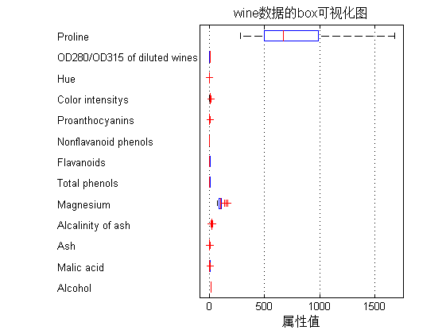
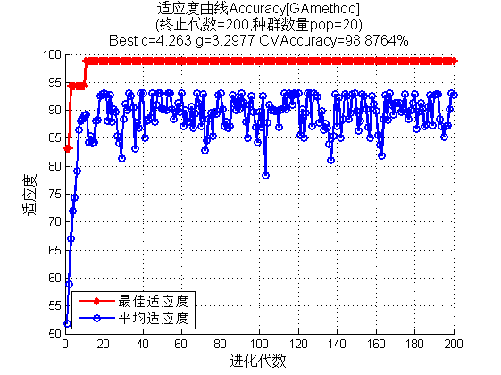
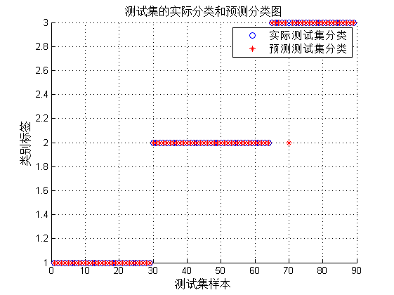

SVM神经网络中的参数优化---如何更好的提升分类器的性能
| 该案例作者申明： |
| 1：本人长期驻扎在此板块里，对该案例提问，做到有问必答。 |
| 2：此案例有配套的教学视频，配套的完整可运行Matlab程序。 |
| 3：以下内容为该案例的部分内容（约占该案例完整内容的1/10）。 |
| 4：此案例为原创案例，转载请注明出处（Matlab中文论坛，《Matlab神经网络30个案例分析》）。 |
| 5：若此案例碰巧与您的研究有关联，我们欢迎您提意见，要求等，我们考虑后可以加在案例里。 |
| 6：您看到的以下内容为初稿，书籍的实际内容可能有少许出入，以书籍实际发行内容为准。 |
| 7：此书其他常见问题、预定方式等，请点击这里。 |
Contents
清空环境变量
function chapter13_GA
close all; clear; clc; format compact;
数据提取
% 载入测试数据wine,其中包含的数据为classnumber = 3,wine:178*13的矩阵,wine_labes:178*1的列向量 load chapter13_wine.mat; % 画出测试数据的box可视化图 figure; boxplot(wine,'orientation','horizontal','labels',categories); title('wine数据的box可视化图','FontSize',12); xlabel('属性值','FontSize',12); grid on; % 画出测试数据的分维可视化图 figure subplot(3,5,1); hold on for run = 1:178 plot(run,wine_labels(run),'*'); end xlabel('样本','FontSize',10); ylabel('类别标签','FontSize',10); title('class','FontSize',10); for run = 2:14 subplot(3,5,run); hold on; str = ['attrib ',num2str(run-1)]; for i = 1:178 plot(i,wine(i,run-1),'*'); end xlabel('样本','FontSize',10); ylabel('属性值','FontSize',10); title(str,'FontSize',10); end % 选定训练集和测试集 % 将第一类的1-30,第二类的60-95,第三类的131-153做为训练集 train_wine = [wine(1:30,:);wine(60:95,:);wine(131:153,:)]; % 相应的训练集的标签也要分离出来 train_wine_labels = [wine_labels(1:30);wine_labels(60:95);wine_labels(131:153)]; % 将第一类的31-59,第二类的96-130,第三类的154-178做为测试集 test_wine = [wine(31:59,:);wine(96:130,:);wine(154:178,:)]; % 相应的测试集的标签也要分离出来 test_wine_labels = [wine_labels(31:59);wine_labels(96:130);wine_labels(154:178)];

数据预处理
数据预处理,将训练集和测试集归一化到[0,1]区间
[mtrain,ntrain] = size(train_wine);
[mtest,ntest] = size(test_wine);
dataset = [train_wine;test_wine];
% mapminmax为MATLAB自带的归一化函数
[dataset_scale,ps] = mapminmax(dataset',0,1);
dataset_scale = dataset_scale';
train_wine = dataset_scale(1:mtrain,:);
test_wine = dataset_scale( (mtrain+1):(mtrain+mtest),: );
选择GA最佳的SVM参数c&g
% GA的参数选项初始化 ga_option.maxgen = 200; ga_option.sizepop = 20; ga_option.cbound = [0,100]; ga_option.gbound = [0,100]; ga_option.v = 5; ga_option.ggap = 0.9; [bestacc,bestc,bestg] = gaSVMcgForClass(train_wine_labels,train_wine,ga_option); % 打印选择结果 disp('打印选择结果'); str = sprintf( 'Best Cross Validation Accuracy = %g%% Best c = %g Best g = %g',bestacc,bestc,bestg); disp(str);
打印选择结果 Best Cross Validation Accuracy = 98.8764% Best c = 4.26302 Best g = 3.29771
利用最佳的参数进行SVM网络训练
cmd = ['-c ',num2str(bestc),' -g ',num2str(bestg)]; model = svmtrain(train_wine_labels,train_wine,cmd);
SVM网络预测
[predict_label,accuracy] = svmpredict(test_wine_labels,test_wine,model); % 打印测试集分类准确率 total = length(test_wine_labels); right = sum(predict_label == test_wine_labels); disp('打印测试集分类准确率'); str = sprintf( 'Accuracy = %g%% (%d/%d)',accuracy(1),right,total); disp(str);
Accuracy = 98.8764% (88/89) (classification) 打印测试集分类准确率 Accuracy = 98.8764% (88/89)
结果分析
% 测试集的实际分类和预测分类图 figure; hold on; plot(test_wine_labels,'o'); plot(predict_label,'r*'); xlabel('测试集样本','FontSize',12); ylabel('类别标签','FontSize',12); legend('实际测试集分类','预测测试集分类'); title('测试集的实际分类和预测分类图','FontSize',12); grid on; snapnow;
子函数 gaSVMcgForClass.m
function [BestCVaccuracy,Bestc,Bestg,ga_option] = gaSVMcgForClass(train_label,train_data,ga_option) % gaSVMcgForClass % % by faruto %Email:patrick.lee@foxmail.com QQ:516667408 http://blog.sina.com.cn/faruto BNU %last modified 2010.01.17 %Super Moderator @ www.ilovematlab.cn % 若转载请注明： % faruto and liyang , LIBSVM-farutoUltimateVersion % a toolbox with implements for support vector machines based on libsvm, 2009. % Software available at http://www.ilovematlab.cn % % Chih-Chung Chang and Chih-Jen Lin, LIBSVM : a library for % support vector machines, 2001. Software available at % http://www.csie.ntu.edu.tw/~cjlin/libsvm % 参数初始化 if nargin == 2 ga_option = struct('maxgen',200,'sizepop',20,'ggap',0.9,... 'cbound',[0,100],'gbound',[0,1000],'v',5); end % maxgen:最大的进化代数,默认为200,一般取值范围为[100,500] % sizepop:种群最大数量,默认为20,一般取值范围为[20,100] % cbound = [cmin,cmax],参数c的变化范围,默认为(0,100] % gbound = [gmin,gmax],参数g的变化范围,默认为[0,1000] % v:SVM Cross Validation参数,默认为5 % MAXGEN = ga_option.maxgen; NIND = ga_option.sizepop; NVAR = 2; PRECI = 20; GGAP = ga_option.ggap; trace = zeros(MAXGEN,2); FieldID = ... [rep([PRECI],[1,NVAR]);[ga_option.cbound(1),ga_option.gbound(1);ga_option.cbound(2),ga_option.gbound(2)]; ... [1,1;0,0;0,1;1,1]]; Chrom = crtbp(NIND,NVAR*PRECI); gen = 1; v = ga_option.v; BestCVaccuracy = 0; Bestc = 0; Bestg = 0; % cg = bs2rv(Chrom,FieldID); for nind = 1:NIND cmd = ['-v ',num2str(v),' -c ',num2str(cg(nind,1)),' -g ',num2str(cg(nind,2))]; ObjV(nind,1) = svmtrain(train_label,train_data,cmd); end [BestCVaccuracy,I] = max(ObjV); Bestc = cg(I,1); Bestg = cg(I,2); for gen = 1:MAXGEN FitnV = ranking(-ObjV); SelCh = select('sus',Chrom,FitnV,GGAP); SelCh = recombin('xovsp',SelCh,0.7); SelCh = mut(SelCh); cg = bs2rv(SelCh,FieldID); for nind = 1:size(SelCh,1) cmd = ['-v ',num2str(v),' -c ',num2str(cg(nind,1)),' -g ',num2str(cg(nind,2))]; ObjVSel(nind,1) = svmtrain(train_label,train_data,cmd); end [Chrom,ObjV] = reins(Chrom,SelCh,1,1,ObjV,ObjVSel); if max(ObjV) <= 50 continue; end [NewBestCVaccuracy,I] = max(ObjV); cg_temp = bs2rv(Chrom,FieldID); temp_NewBestCVaccuracy = NewBestCVaccuracy; if NewBestCVaccuracy > BestCVaccuracy BestCVaccuracy = NewBestCVaccuracy; Bestc = cg_temp(I,1); Bestg = cg_temp(I,2); end if abs( NewBestCVaccuracy-BestCVaccuracy ) <= 10^(-2) && ... cg_temp(I,1) < Bestc BestCVaccuracy = NewBestCVaccuracy; Bestc = cg_temp(I,1); Bestg = cg_temp(I,2); end trace(gen,1) = max(ObjV); trace(gen,2) = sum(ObjV)/length(ObjV); end % figure; hold on; trace = round(trace*10000)/10000; plot(trace(1:gen,1),'r*-','LineWidth',1.5); plot(trace(1:gen,2),'o-','LineWidth',1.5); legend('最佳适应度','平均适应度',3); xlabel('进化代数','FontSize',12); ylabel('适应度','FontSize',12); axis([0 gen 0 100]); grid on; axis auto; line1 = '适应度曲线Accuracy[GAmethod]'; line2 = ['(终止代数=', ... num2str(gen),',种群数量pop=', ... num2str(NIND),')']; line3 = ['Best c=',num2str(Bestc),' g=',num2str(Bestg), ... ' CVAccuracy=',num2str(BestCVaccuracy),'%']; title({line1;line2;line3},'FontSize',12);
| 版权所有：Matlab中文论坛 |